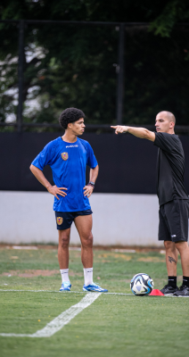

Gimnasio kinésico
Trabajos de campo
Evaluación y tratamiento
del Sistema Nervioso Autónomo
Volvé a competir...más rápido, mejor preparado.
Recuperate como un profesional.
Egresado de la Universidad Fundación H. A. Barceló en el año 2011. En 2014 culminé mis estudios en el Posgrado en la Universidad Favaloro siendo Especialista en lesiones del deporte, defendiendo mi tesis sobre "Lesiones musculares en el fútbol de élite". En 2022 defendí mi tesis "Protocolo de prevención de lesiones musculares en el fútbol de élite" para obtener mi diplomatura en ciencias del entrenamiento de la Universidad de Rafaela.
En 2014 comence a trabajar en las divisiones juveniles de Argentinos Juniors, para luego ser kinesiologo de la Primera Division, participando en el Torneo Local y Copa Sudamericana. En 2020 tuve la oportunidad de trabajar en el Club Atlético Platense, siendo el kinesiólogo del plantel profesional en La Liga Nacional de básquet desde la temporada 2020-2021 hasta la temporada 2022-2023. En la actualidad me encuentro trabajando con las selecciones juveniles de fútbol de Venezuela. En 2023 pude cumplir uno de mis mayores sueños, participe de la Copa del Mundo Sub-17 en Indonesia.
Somos un consultorio de kinesiología especializado en traumatología y deporte, en el que buscamos brindar un servicio de calidad en la resolución de las patologías tanto del aparato locomotor como de la columna y lesiones deportivas.
Evaluaciones funcionales Isométricas de fuerza y funcionales.
Deportología - Tratamiento en todo tipo de lesiones deportivas, prevención de lesiones, ejercicios de campo para cada tipo de lesión en grupos o individuales para la vuelta a la competencia. Planes de trabajo individualizados.
Prevention Program - Programa Preventivo de lesiones para toda clase de deportista.
Recovery Program - Programa de recuperación post entrenamiento o competencia, para que te recuperes al 100% del esfuerzo.
Mep Sport Concept - Para tendinopatías crónicas, lesiones musculares, contracturas, etc.
Kinesiología a distancia de manera on-line - Con seguimiento semanal, rutina de ejercicios y un cuestionario para realizar la individualización del plan de tratamiento.
Egresado de la Universidad Fundación H. A. Barceló en el año 2011. En 2014 culminé mis estudios en el Posgrado en la Universidad Favaloro siendo Especialista en lesiones del deporte, defendiendo mi tesis sobre "Lesiones musculares en el fútbol de élite". En 2022 defendí mi tesis "Protocolo de prevención de lesiones musculares en el fútbol de élite" para obtener mi diplomatura en ciencias del entrenamiento de la Universidad de Rafaela.
Comencé mi carrera en el mundo del deporte siendo muy joven en la Primera división D en dos equipos de fútbol: Club Social San Martin de Burzaco y Leandro N. Alem. Posterior a esas dos experiencias me introduje en el mundo del básquet al trabajar durante una temporada con I.C.D Pedro Echagüe en el Torneo Federal.
En 2014 formé parte del cuerpo médico de la A.A. Argentinos Juniors, comenzando mi carrera como encargado de las divisiones inferiores y del plantel de reserva.
En 2015 comencé a formar parte del Staff de la primera división como kinesiólogo del Plantel Profesional, participando en distintos torneos de prestigio nacional e internacional como la Copa Sudamericana, Copa Argentina, Copa de la Superliga, Superliga, etc.
En 2020 tuve la oportunidad de trabajar en el Club Atlético Platense, siendo el kinesiólogo del plantel profesional en La Liga Nacional de básquet desde la temporada 2020-2021 hasta la temporada 2022-2023.
En la actualidad me encuentro trabajando con las selecciones juveniles de fútbol de Venezuela. En 2023 pude cumplir uno de mis mayores sueños, participe de la Copa del Mundo sub-17 en Indonesia.
Profesional de consulta y rehabilitación de deportistas profesionales de distintas disciplinas deportivas de élite como son el tenis, Básquet, Boxeo.

OMINT - Cobertura con todos los planes.
OSDE - Cobertura con todos los planes.
OSPPRA - Cobertura con todos los planes.
SWISS MEDICAL - Cobertura con todos los planes.
Si no encuentra su cobertura, contamos con atención particular